ML Intro and Clustering#
In this session we provide a short introduction to Machine Learning, and one of its applications, i.e. Clustering.
The goals are:
to get a grasp of what machine learning is
to show the basic concept of data exploration and interpretation
to use clustering algorithms in a particular problem.
Setup#
import requests
url = "https://raw.githubusercontent.com/AstroStat-Academy/assets-public/main/styles/plot_style.py"
style = requests.get(url).text
exec(style)
from collections import defaultdict
import numpy as np
import matplotlib
import matplotlib.pyplot as plt
from matplotlib import colors
import seaborn as sns
# Set up a fancy plot style (you can comment it out without consequences)
import sys; sys.path.append('../src'); import plot_style
import warnings
warnings.filterwarnings(action='ignore')
# some handy functions
def add_plot_info():
"""Just add some information for the plot"""
plt.title('Clusters')
plt.xlabel('X')
plt.ylabel('Y')
plt.grid(True)
A bit of introduction to ML#

What is machine learning ?#
Arthur Samuel (1959):
“Field of study that gives computers the ability to learn without being explicitly programmed.”
How did we get here?#

(Credit: Nvidia blog - (an interesting read!)

(Credit: Sai Venkat Javvadi (2025)
and … why now?#
More powerful, abundant, and cheap computation (CPUs/GPUs).
Growing data sets.
Advancements in underlying algorithms and implementation.
This is true for both everyday and Astronomy applications !
ML branches#

(Credit: CogHub)
Supervised: Labelled data where the algorithms learn to predict the output from the input data.
Unsupervised: Non-labelled data where the algorithms learn to identify structures from the input data.
Semi-supervised: Some labelled data - most is not - and a mixture of supervised and unsupervised techniques can be implemented.
Unsupervised approaches in particular:#
Clustering: discover groupings or/and structures in the data, i.e. concentrations of datapoints or overdensities (e.g. the locations of galaxies in a BPT diagram)
Association: discover the rule(s) describing between variables or features in a dataset (e.g. customer recommendations)
Dimensionality reduction: tool to reduce the number of input variables or features in a dataset (the more you have the more challenging it becomes to build a predictive model - referred to as curse of dimensionality) - also usefulf for visualization purposes.
Pros#
They can make new discoveries, as often enough we don’t know what they’re looking for in data.
They do not require training, which saves (huge) time on producing labels (manual classification tasks such as spectroscopic classification).
It reduces the chance of human error and bias, which could occur during manual labeling processes.
Unlabeled data is much easier and faster to get.
Cons#
Output needs careful proper interpretation:
the groups may not match informational classes
extra effort has to be made to validate the groups.
Less accurate predictive results, as the labels are not part of the process and the method has to learn it by itself.
More time is needed to train these algorithms:
they need time to analyze and calculate all possibilities
the deal with huge datases that may increase computational complexity.
The most critical take-home points:#
No matter which algorithm you pick, the goal of ML is to make predictions and classifications.
There is no optimal algorithm, it all depends on your specific problem!
 Figure 3.1. There is not a single algorithm to rule them all !!!
Figure 3.1. There is not a single algorithm to rule them all !!!(Credit: knowyourmeme.com)
Clustering#
or: "What can data tell us ?"
Selecting a tool - the K-means algorithm#
The K-means algorithm tries to partition a sample of N observations (with each observation being a \(d\)-dimensional vector) into \(k\) individual clusters \(C_k\).
We first need to find a metric, i.e. to define the loss function, which (in this case) is the within-cluster sum-of-squares of the observations:
$\( Loss = \sum_{k=1}^{K} \sum_{i \epsilon C_k} ||x_i-\mu_k||^2\)$,
where \(\mu_k=\frac{1}{N_k}\sum_{i \epsilon C_k} x_i\) is the mean/centroid of the \(N_k\) points included in each of the \(C_k\) clusters.
The solution comes from minimizing the above function, i.e.:
$\( min (Loss) = \min_{\mu_k} \left ( \sum_{k=1}^{K} \sum_{i \epsilon C_k} ||x_i-\mu_k||^2 \right )\)$.
Steps:
Initiate algorithm by selecting \(k\) means
e.g. select randomly \(k\) observations as initial means - see also Wiki:K-means initializationAssign each observation to the nearest cluster
Calculate the new mean value for each cluster \(C_k\) according to the new observations assiged
Repeat steps 2 and 3 up to the point that there are no updates in the assigments to the clusters.

(Credit: Clustering with Scikit with GIFs, by David Sheehan)
A globally optimal minimum is not guaranteed (might converge to a local minimum). This is highly dependent on the initialization of the centroids. This is why, in practice, K-means is run multiple times with different starting values selecting the result with the lowest sum-of-squares error. To improve on that we can initially select centroids that are generally distant from each other (sklearn implementation by using init='k-means++' parameter). For more see Grouping data points with k-means clustering, by Jeremy Jordan.
Complexity
\(O(knT)\), where k, n and T are the number of clusters, samples and iterations, respectively.
Pros
Simple and intuitive
Cons
The number of clusters (K) must be provided (or cross-validated)
There is an inherit assumption of isotropic clusters (i.e. not well fitted for elongated clusters, or manifolds with irregular shapes)
Inertia is not a normalized metric: lower values are better , but as the dimensions increase so does the inertia
An alternative for faster implementation - Mini Batch K-means
For faster computations the sklearn offers the Mini Batch K-means method which simply breaks the initial set of observations/data points to smaller randomly selected subsamples.
For each subsample in the mini batch the assigned centroid is updated by taking into account the average of that subsample and all previous subsamples assigned to that centroid. This is repeated until the predefined number of iterations is reached. Its results are generally only slightly worse then the standard algorithm.
Example use of K-means#
In the following example we artificially create two groups of data and we use the K-means algorithm.
Creating some data
# Set random seed for reproducibility
np.random.seed(2025)
# select number of samples/points per cluster
num_samples = 50
# Generate cluster 1 with normal distribution
cluster1_mean = [3, 3]
cluster1_cov = [[2, 0], [0, 2]]
cluster1_samples = np.random.multivariate_normal(cluster1_mean,
cluster1_cov,
num_samples)
# Generate cluster 2 with normal distribution
cluster2_mean = [8, 8]
cluster2_cov = [[2, 0], [ 0, 2]]
cluster2_samples = np.random.multivariate_normal(cluster2_mean, cluster2_cov, num_samples)
plt.plot(cluster1_samples[:,0],cluster1_samples[:,1],
'o', color='tab:blue', label='Cluster 1')
plt.plot(cluster2_samples[:,0],cluster2_samples[:,1],
'o', color='tab:orange', label='Cluster 2')
add_plot_info()
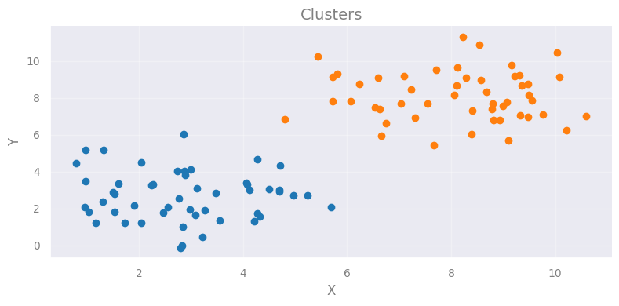
The above plot is the result of the mock data creation. In reality what we would see is the following plot (i.e. only the data without any idea of the original group).
X = np.concatenate((cluster1_samples,cluster2_samples))
plt.plot(X[:,0], X[:,1] , '.k', ms=10)
add_plot_info()
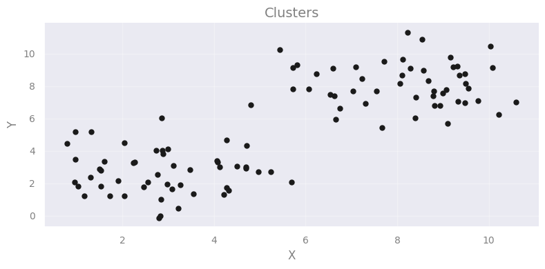
Implementation
Throughout the machine-learning part we will be using the scikit-learn module developed on top of NumPy, SciPy, and matplotlib, offering efficient tools on machine-learning applications, data mining, and data analysis.
We will use sklearn.cluster.KMeans, for which the most important (currently) option is the number of groups (we guess). A valid option is of course 2.
from sklearn.cluster import KMeans
# number of clusters
Clusters_kmeans = 2
# preparing the model with this number of clusters
kmeans_model = KMeans(n_clusters=Clusters_kmeans)
# fitting the model to the data
kmeans_model.fit( X )
KMeans(n_clusters=2)In a Jupyter environment, please rerun this cell to show the HTML representation or trust the notebook.
On GitHub, the HTML representation is unable to render, please try loading this page with nbviewer.org.
KMeans(n_clusters=2)
Check how we apply the algorithm:
Selecting the parameters (e.g. number of clusters)
Run the algorithm using the
.fit()method (model learns from data)
# returning the cluster identified
print("Cluster centers:")
print(kmeans_model.cluster_centers_)
# comparing with the real ones
print()
print("Real centers:")
print(cluster1_mean, cluster2_mean)
Cluster centers:
[[8.11134233 8.10006931]
[2.88345763 2.69265377]]
Real centers:
[3, 3] [8, 8]
The algorithm returns the class assigned to each data point:
print(kmeans_model.labels_)
[1 1 1 1 1 1 1 1 1 1 1 1 1 1 1 1 1 1 1 1 1 1 1 1 1 1 1 1 1 1 1 1 1 1 1 1 1
1 1 1 1 1 1 1 1 1 1 1 1 1 0 0 0 0 0 0 0 0 0 0 0 0 0 0 0 0 0 0 0 0 0 0 0 0
0 0 0 0 0 0 0 0 0 0 0 0 0 0 0 0 0 0 0 0 0 0 0 0 0 0]
# coordinates of the clusters for plotting
cc_x = kmeans_model.cluster_centers_[:,0]
cc_y = kmeans_model.cluster_centers_[:,1]
# plotting the centers
plt.plot(cc_x, cc_y, 'k+', ms=100)
# plotting the datapoints color-coded according
# to the cluster they have been assigned to
new_map = matplotlib.cm.gray.from_list('clustering', ('blue', 'red'), N=Clusters_kmeans)
scat = plt.scatter( X[:,0], X[:,1], c=kmeans_model.labels_, edgecolors='face', cmap=new_map)
cb = plt.colorbar(scat, ticks=range(0,Clusters_kmeans+1,1)) # number of clusters
cb.set_ticklabels(range(1,Clusters_kmeans+2,1))
cb.set_label('Cluster Label')
add_plot_info()
plt.show()
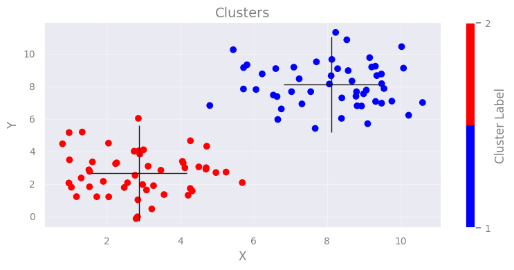
Exercise 1:
Objective: Play around with the number of clusters as an input to K-means and explore the effect.
Task: Use the following function (cluster_generator) to create some clusters. It does it automatically for you so that you do not know how many clusters it creates (well… you can find out but you shouldn’t!). It returns an array of positions for all samples from all clusters.
Plot the samples and guess the number of clusters.
Put this into K-means and run the algorithm.
Discuss with your partner what you notice. You can run it a few times.
Data: We are using the ‘cluster_generator’ function to create some mock up data.
def cluster_generator(num_clusters=2, num_samples=50, verbose=False):
""" A function to automatically generate some clusters
randomly. It returns one single dataset (points with
x and y) and the cluster centers.
num_samples: 50 , numper of points per cluster
verbose: False , not printing any information on
the clusters.
"""
# automatically create a number of clusters in this range
num_clusters = np.random.randint(3, 7)
# select number of samples/points per cluster
num_cluster_samples = num_samples
# Generate clusters with normal distribution
center_clusters = []
data_clusters = []
for c in range(num_clusters):
cluster_mean = [np.random.randint(-10, 15), np.random.randint(-10, 15)]
# print(cluster_mean)
cluster_cov = [[np.random.randint(1,3), 0], [0, np.random.randint(1,3)]]
# print(cluster_cov)
cluster_samples = np.random.multivariate_normal(cluster_mean,
cluster_cov,
num_cluster_samples)
data_clusters.append(cluster_samples)
center_clusters.append(cluster_mean)
if verbose==True:
print(cluster_mean)
plt.scatter(cluster_samples[:,0],cluster_samples[:,1], label=f'Cluster {c}')
data_clusters = np.concatenate(data_clusters, axis=0)
# print(center_clusters)
return data_clusters, center_clusters
# Generating and visualizing data
X, Xc = cluster_generator()
plt.plot(X[:,0], X[:,1] , '.k', ms=10)
add_plot_info()
---------------------------------------------------------------------------
NameError Traceback (most recent call last)
Cell In[7], line 41
37 return data_clusters, center_clusters
40 # Generating and visualizing data
---> 41 X, Xc = cluster_generator()
43 plt.plot(X[:,0], X[:,1] , '.k', ms=10)
44 add_plot_info()
Cell In[7], line 11, in cluster_generator(num_clusters, num_samples, verbose)
2 """ A function to automatically generate some clusters
3 randomly. It returns one single dataset (points with
4 x and y) and the cluster centers.
(...) 8 the clusters.
9 """
10 # automatically create a number of clusters in this range
---> 11 num_clusters = np.random.randint(3, 7)
13 # select number of samples/points per cluster
14 num_cluster_samples = num_samples
NameError: name 'np' is not defined
def cluster_generator(num_clusters=2, num_samples=50, verbose=False):
""" A function to automatically generate some clusters
randomly. It returns one single dataset (points with
x and y) and the cluster centers.
num_samples: 50 , numper of points per cluster
verbose: False , not printing any information on
the clusters.
"""
# automatically create a number of clusters in this range
num_clusters = np.random.randint(3, 7)
# select number of samples/points per cluster
num_cluster_samples = num_samples
# Generate clusters with normal distribution
center_clusters = []
data_clusters = []
for c in range(num_clusters):
cluster_mean = [np.random.randint(-10, 15), np.random.randint(-10, 15)]
# print(cluster_mean)
cluster_cov = [[np.random.randint(1,3), 0], [0, np.random.randint(1,3)]]
# print(cluster_cov)
cluster_samples = np.random.multivariate_normal(cluster_mean,
cluster_cov,
num_cluster_samples)
data_clusters.append(cluster_samples)
center_clusters.append(cluster_mean)
if verbose==True:
print(cluster_mean)
plt.scatter(cluster_samples[:,0],cluster_samples[:,1], label=f'Cluster {c}')
data_clusters = np.concatenate(data_clusters, axis=0)
# print(center_clusters)
return data_clusters, center_clusters
# Generating and visualizing data
X, Xc = cluster_generator()
plt.plot(X[:,0], X[:,1] , '.k', ms=10)
add_plot_info()
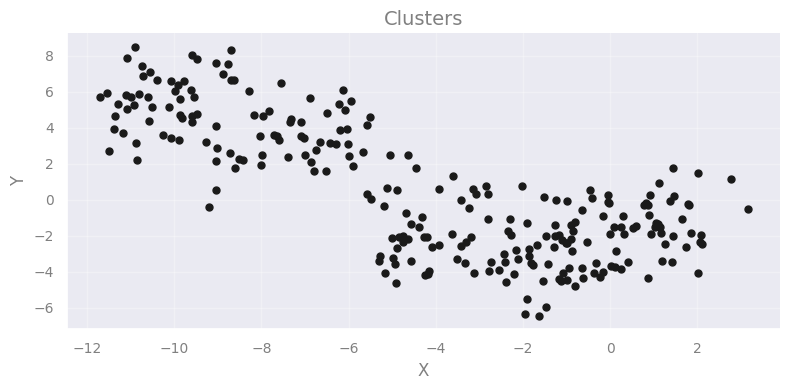
from sklearn.cluster import KMeans
# number of clusters -GUESS !
Clusters_kmeans = ...
# preparing the model with this number of clusters
kmeans_model = KMeans(n_clusters=...)
# fitting the model to the data
kmeans_model.fit( ... )
# returning the cluster identified
print(f"Cluster centers from K-means ({len(...)} found):")
print(...)
# comparing with the real ones
print()
print(f"Real centers ({len(Xc)} clusters):")
for c in Xc:
print(c)
plt.plot(c[0],c[1], 'x', c='tab:green', ms=80)
# coordinates of the clusters for plotting
cc_x = ...[:,0]
cc_y = ...[:,1]
# plotting the centers
plt.plot(cc_x, cc_y, 'k+', ms=100)
# plotting the datapoints color-coded according
# to the cluster they have been assigned to
new_map = matplotlib.cm.gray.from_list('clustering', ('blue', 'red'), N=Clusters_kmeans)
scat = plt.scatter( ..., ..., c=..., edgecolors='face', cmap=new_map)
cb = plt.colorbar(scat, ticks=range(0,Clusters_kmeans+1,1)) # number of clusters
cb.set_ticklabels(range(1,Clusters_kmeans+2,1))
cb.set_label('Cluster Label')
plt.text(-1,7,"real", color='g')
plt.text(-1,6,"predicted", color='k')
add_plot_info()
plt.show()
<>:24: SyntaxWarning: 'ellipsis' object is not subscriptable; perhaps you missed a comma?
<>:25: SyntaxWarning: 'ellipsis' object is not subscriptable; perhaps you missed a comma?
<>:24: SyntaxWarning: 'ellipsis' object is not subscriptable; perhaps you missed a comma?
<>:25: SyntaxWarning: 'ellipsis' object is not subscriptable; perhaps you missed a comma?
---------------------------------------------------------------------------
InvalidParameterError Traceback (most recent call last)
Cell In[8], line 10
8 kmeans_model = KMeans(n_clusters=...)
9 # fitting the model to the data
---> 10 kmeans_model.fit( ... )
12 # returning the cluster identified
13 print(f"Cluster centers from K-means ({len(...)} found):")
File ~/miniconda3/envs/astrostat25/lib/python3.12/site-packages/sklearn/base.py:1382, in _fit_context.<locals>.decorator.<locals>.wrapper(estimator, *args, **kwargs)
1377 partial_fit_and_fitted = (
1378 fit_method.__name__ == "partial_fit" and _is_fitted(estimator)
1379 )
1381 if not global_skip_validation and not partial_fit_and_fitted:
-> 1382 estimator._validate_params()
1384 with config_context(
1385 skip_parameter_validation=(
1386 prefer_skip_nested_validation or global_skip_validation
1387 )
1388 ):
1389 return fit_method(estimator, *args, **kwargs)
File ~/miniconda3/envs/astrostat25/lib/python3.12/site-packages/sklearn/base.py:436, in BaseEstimator._validate_params(self)
428 def _validate_params(self):
429 """Validate types and values of constructor parameters
430
431 The expected type and values must be defined in the `_parameter_constraints`
(...) 434 accepted constraints.
435 """
--> 436 validate_parameter_constraints(
437 self._parameter_constraints,
438 self.get_params(deep=False),
439 caller_name=self.__class__.__name__,
440 )
File ~/miniconda3/envs/astrostat25/lib/python3.12/site-packages/sklearn/utils/_param_validation.py:98, in validate_parameter_constraints(parameter_constraints, params, caller_name)
92 else:
93 constraints_str = (
94 f"{', '.join([str(c) for c in constraints[:-1]])} or"
95 f" {constraints[-1]}"
96 )
---> 98 raise InvalidParameterError(
99 f"The {param_name!r} parameter of {caller_name} must be"
100 f" {constraints_str}. Got {param_val!r} instead."
101 )
InvalidParameterError: The 'n_clusters' parameter of KMeans must be an int in the range [1, inf). Got Ellipsis instead.
Question
How does the algorithm performs with respect to your guess ?
How dependant is on the number of clusters?
[discuss with your partner before clicking here!]
The number of clusters definnes precisely what the algorithm will find.
And, if clusters are ovelapping then it is more difficult for the algorithm to detect them.
[Solution below]
from sklearn.cluster import KMeans
# number of clusters -GUESS !
Clusters_kmeans = 5
# preparing the model with this number of clusters
kmeans_model = KMeans(n_clusters=Clusters_kmeans)
# fitting the model to the data
kmeans_model.fit( X )
# returning the cluster identified
print(f"Cluster centers from K-means ({len(kmeans_model.cluster_centers_)} found):")
print(kmeans_model.cluster_centers_)
# comparing with the real ones
print()
print(f"Real centers ({len(Xc)} clusters):")
for c in Xc:
print(c)
plt.plot(c[0],c[1], 'x', c='tab:green', ms=80)
# coordinates of the clusters for plotting
cc_x = kmeans_model.cluster_centers_[:,0]
cc_y = kmeans_model.cluster_centers_[:,1]
# plotting the centers
plt.plot(cc_x, cc_y, 'k+', ms=100)
# plotting the datapoints color-coded according
# to the cluster they have been assigned to
new_map = matplotlib.cm.gray.from_list('clustering', ('blue', 'red'), N=Clusters_kmeans)
scat = plt.scatter( X[:,0], X[:,1], c=kmeans_model.labels_, edgecolors='face', cmap=new_map)
cb = plt.colorbar(scat, ticks=range(0,Clusters_kmeans+1,1)) # number of clusters
cb.set_ticklabels(range(1,Clusters_kmeans+2,1))
cb.set_label('Cluster Label')
plt.text(-1,7,"real", color='g')
plt.text(-1,6,"predicted", color='k')
add_plot_info()
plt.show()
Cluster centers from K-means (5 found):
[[ 0.71439209 -0.83577303]
[ -7.06444218 3.23102943]
[ -4.0283207 -1.6724052 ]
[-10.13680395 5.6495585 ]
[ -1.08385192 -3.66178675]]
Real centers (5 clusters):
[1, -1]
[-1, -3]
[-10, 6]
[-4, -2]
[-7, 3]
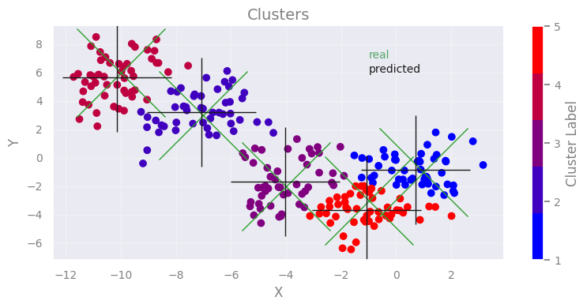
[End of solution]
How to find the best k value? - the “elbow” approach#
K-means needs a certain number of clusters to run. Therefore, our selection affects our interpretation (and any potential discoveries!). So, how can we improve (automatically) the selection of clusters that the K-means algorithm will search for?
One answer can be given through the “elbow method”. This method is based on the following process:
Running the algorithm for a range of different clusters k (from 1 up to a maximum number).
Calculating the ‘inertia’ for each k choice.
Plotting the above quantity as a function of k:
Identifying the ‘elbow’ point in the plot, i.e., the point on the graph where the rate of decrease significantly slows down. This indicates that adding more clusters beyond this point does not substantially reduce inertia, and thus, we do not gain much.
The k value corresponding to this point is considered the optimal choice.
☛ This method does not always provide a clear answer, especially if the dataset does not exhibit well-defined clusters or if they have different sizes and densities.
Note: we are using the latest X dataset (from the previous set). You may see different results from others!
from sklearn import metrics
inert = []
xclusters = range(2,14)
for i in xclusters:
print(f'-- working with {i} clusters...')
kmeans_model = KMeans(n_clusters=i, random_state=0, n_init='auto')
kmeans_model.fit(X)
inert.append(kmeans_model.inertia_)
-- working with 2 clusters...
-- working with 3 clusters...
-- working with 4 clusters...
-- working with 5 clusters...
-- working with 6 clusters...
-- working with 7 clusters...
-- working with 8 clusters...
-- working with 9 clusters...
-- working with 10 clusters...
-- working with 11 clusters...
-- working with 12 clusters...
-- working with 13 clusters...
plt.plot( xclusters, inert)
plt.xlabel('Number of clusters')
plt.ylabel('Inertia (loss) ')
plt.show()
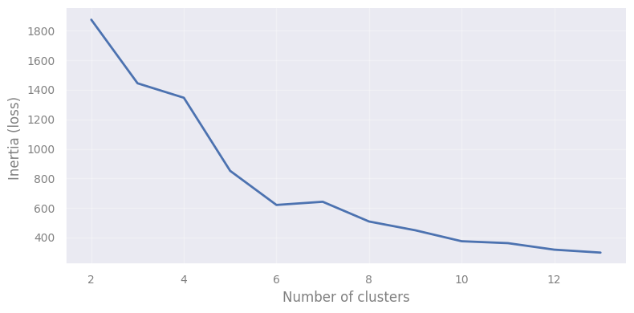
Let’s plug in the number of clusters corresponding to the “elbow” found:
from sklearn.cluster import KMeans
# number of clusters - from "elbow" plot
Clusters_kmeans = 6
# preparing the model with this number of clusters
kmeans_model = KMeans(n_clusters=Clusters_kmeans)
# fitting the model to the data
kmeans_model.fit( X )
# returning the cluster identified
print(f"Cluster centers from K-means ({len(kmeans_model.cluster_centers_)} found):")
print(kmeans_model.cluster_centers_)
# comparing with the real ones
print()
print(f"Real centers ({len(Xc)} clusters):")
for c in Xc:
print(c)
plt.plot(c[0],c[1], 'x', c='tab:green', ms=80)
# coordinates of the clusters for plotting
cc_x = kmeans_model.cluster_centers_[:,0]
cc_y = kmeans_model.cluster_centers_[:,1]
# plotting the centers
plt.plot(cc_x, cc_y, 'k+', ms=100)
# plotting the datapoints color-coded according
# to the cluster they have been assigned to
new_map = matplotlib.cm.gray.from_list('clustering', ('blue', 'red'), N=Clusters_kmeans)
scat2 = plt.scatter( X[:,0], X[:,1], c=kmeans_model.labels_, edgecolors='face', cmap=new_map)
cb = plt.colorbar(scat2, ticks=range(0,Clusters_kmeans+1,1)) # number of clusters
cb.set_ticklabels(range(1,Clusters_kmeans+2,1))
cb.set_label('Cluster Label')
plt.text(-1,7,"real", color='g')
plt.text(-1,6,"predicted", color='k')
add_plot_info()
plt.show()
Cluster centers from K-means (6 found):
[[ -1.76432715 -3.58163868]
[-10.13680395 5.6495585 ]
[ -7.06444218 3.23102943]
[ 1.00324051 -2.67794222]
[ 0.43482746 -0.3867459 ]
[ -4.23525068 -1.46946171]]
Real centers (5 clusters):
[1, -1]
[-1, -3]
[-10, 6]
[-4, -2]
[-7, 3]
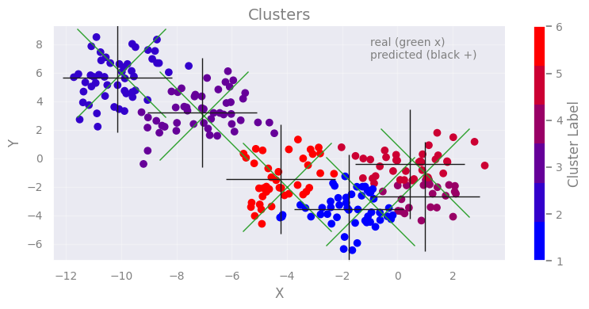
Other metrics to automate the cluster number#
Now, given that we do not know anything apriori for the numbers of clusters, there are some metrics that can used to determine the performance in each case.
Silhouette Score#
Using the distances between the points in the same cluster and theirs with all other points in the next nearer cluster:
where a corresponds to the mean distance between a sample and all other samples within the same cluster, while b is the mean distance of a sample (in the examined cluster) with all other points in the next nearest cluster.
⤍ A higher value indicates better performance (-1…1).
Calinski-Harabasz Index#
Similar to the silhouette score, but using the ratio of the sum of dispersion of the samples within each cluster and the dispersion of the clusters in total. For a set of data \(E\) of size \(n_E\) which has been clustered into \(k\) clusters, it is defined as:
where \(tr(B_k)\) is the trace of the between group dispersion matrix, and \(tr(W_k)\) the trace of the within-cluster dispersion matrix, defined as:
with \(C_q\) the set of points in cluster \(q\), \(c_q\) the center of cluster \(q\), \(c_E\) the center of \(E\), and \(n_q\) the number of points in cluster \(q\).
⤍ A higher value indicates better performance (denser and well separated clusters).
Davies-Bouldin Index#
It is an index that calculates the ‘similarity’ between clusters, and actually measures how the distance between clusters compares with the sizes of the clusters themselves.
where \(R_{ij} = \frac{s_i+s_j}{d_{ij}}\) corresponds to the similarity measurement, \(s_i\) (\(s_k\)) is the average distance between each point of cluster \(i\) (k) and the centroid of that cluster (diameter), and \(d_{ij}\) is the distance between cluster centroids \(i\) and \(j\). The form chosen for \(R_{ij}\) is a nonnegative and symmetric.
⤍ A lower value (closer to 0) indicate better performance.
☛ You can (should!) check sklearn’s clustering metrics page for more details regarding the drawbacks and advantages of each metric.
Let’s see them in action!
from sklearn.metrics import silhouette_score, calinski_harabasz_score, davies_bouldin_score
# Define range of cluster numbers to test
k_values = range(2, 10)
# Initialize lists to store scores
inertia = []
silhouette = []
calinski = []
davies = []
# Fit KMeans and compute metrics for each k
for k in k_values:
kmeans = KMeans(n_clusters=k, n_init=10, random_state=42)
labels = kmeans.fit_predict(X)
inertia.append(kmeans.inertia_)
silhouette.append(silhouette_score(X, labels))
calinski.append(calinski_harabasz_score(X, labels))
davies.append(davies_bouldin_score(X, labels))
# Plot all metrics for visual comparison
fig, axs = plt.subplots(2, 2, figsize=(12, 10))
axs[0, 0].plot(k_values, inertia, 'bo-')
axs[0, 0].set_title('Elbow Method (Inertia)')
axs[0, 0].set_xlabel('k')
axs[0, 0].set_ylabel('Inertia')
axs[0, 1].plot(k_values, silhouette, 'go-')
axs[0, 1].set_title('Silhouette Score')
axs[0, 1].set_xlabel('k')
axs[0, 1].set_ylabel('Score')
axs[1, 0].plot(k_values, calinski, 'ro-')
axs[1, 0].set_title('Calinski-Harabasz Index')
axs[1, 0].set_xlabel('k')
axs[1, 0].set_ylabel('Score')
axs[1, 1].plot(k_values, davies, 'mo-')
axs[1, 1].set_title('Davies-Bouldin Index')
axs[1, 1].set_xlabel('k')
axs[1, 1].set_ylabel('Score')
plt.tight_layout()
plt.show()
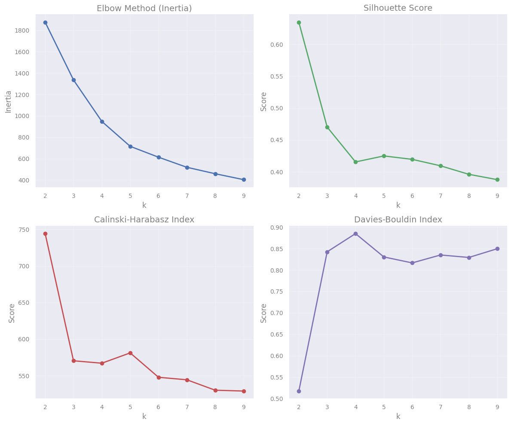
Our pick would probably be 5-6 clusters in this case (Silhouette and Calinsky-Harabasz suggest 5 while Davies-Bouldin 6). We notice that different metrics can give slightly different results, as they are sensitive to different cluster properties. Careful interpretation is required to derive non-misleading conclusions.and combination of the results can lead to more accurate conclusions.
Selecting a tool - the DBSCAN algorithm#
The DBSCAN (Density Based Spatial Clustering of Applications with Noise) algorithm views clusters as areas of high density separated by areas of low density. Thus, clusters found by DBSCAN can be of any shape - as opposed to other algorithms (K-means for example) which assume that clusters are convex shaped.
It uses 2 parameters:
\(eps\) : neighborhood size
\(minPts\) : minimum number of points for a neighborhood to be considered dense
With a sinlge scan we can label the points as: core, border, noise. How?
A point \(p\) is defined core if at least \(minPts\) points are within the area defined by \(eps\) (including itself).
A border point is a non-core point that has at least one core point in its neighborhood
A noise point is neither a core nor a border point. There represent outliers in the data set

(Credit: Clustering applied to showers in the OPERA, by Alex Rogozhnikov)
Having defined these points, DBSCAN operates as follows:
Steps:
The algorithm selects a core point that has not been explored.
It finds the points that are within an
epsdistance from this point and examines them.If these points are also core points, it examines their
eps-neighborhood, expanding the cluster.The above process is applied recursively to all points (core points and border points), further expanding the cluster it is examining until all points it has visited are exhausted.
When these points are exhausted, it selects the next unvisited core point (in another cluster) and continues the previous process.
The process ends when all points have been assigned to a cluster or identified as noise.

(Credit: Clustering applied to showers in the OPERA, by Alex Rogozhnikov)
Complexity
\(O(n^2)\), where n is the number of points.
Pros
Any number of clusters
Clusters of varying size and shape
Finds and ignores outliers
Cons
Relatively slow
Extremely sensitive to parameters choice
In rare cases, border points move to an other cluster when DBSCAN is re-run
Serious troubles with clusters with varying density
(OPTICS and HDBSCAN are variations which address this problem)
Example use of DBSCAN#
In the following example we artificially create two groups of data and we use the DBSAN algorithm.
Creating some data
# import this to create some fancy data
from sklearn.datasets import make_moons
# Generate synthetic data (moons dataset)
Xd, y = make_moons(n_samples=200, noise=0.1, random_state=2025)
num_classes = len(set(y))
new_map = matplotlib.cm.gray.from_list('clustering', ('blue', 'red'), N=num_classes)
scat2 = plt.scatter( Xd[:,0], Xd[:,1], c=y,
edgecolors='face', cmap=new_map)
cb = plt.colorbar(scat2, ticks=range(1,num_classes+2,1)) # number of clusters
cb.set_ticklabels(range(1,num_classes+2,1))
cb.set_label('Cluster Label')
add_plot_info()
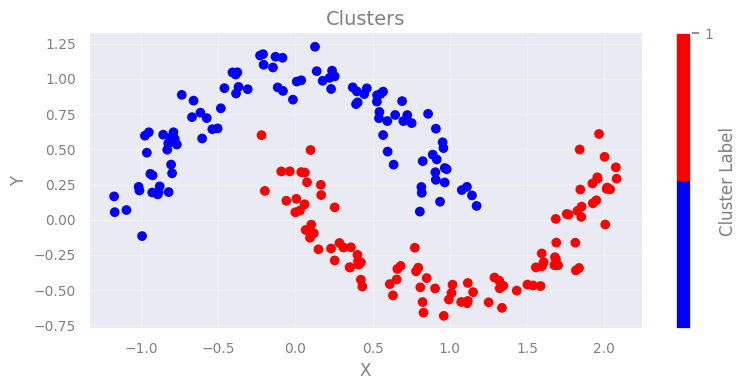
What we should see if we combine into one dataset.
plt.plot(Xd[:,0], Xd[:,1], 'ok')
add_plot_info()
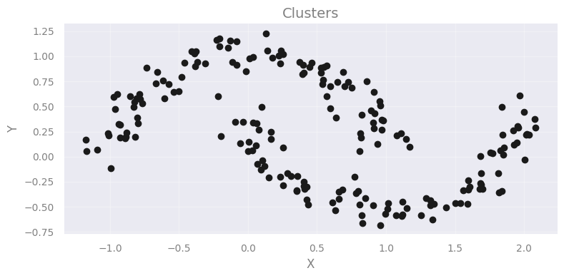
Implementation
We will use sklearn.cluster.DBSCAN. The most important parameters of course are eps and min_samples.
from sklearn.cluster import DBSCAN
# define the model first
dbscan = DBSCAN(eps=0.08, min_samples=3)
# fit the data
dbscan.fit(Xd)
DBSCAN(eps=0.08, min_samples=3)In a Jupyter environment, please rerun this cell to show the HTML representation or trust the notebook.
On GitHub, the HTML representation is unable to render, please try loading this page with nbviewer.org.
DBSCAN(eps=0.08, min_samples=3)
Check the all algorithms are applied using the same methods!
Let’s see the number of classes returned by the algorithm:
print(set(dbscan.labels_))
{np.int64(0), np.int64(1), np.int64(2), np.int64(3), np.int64(4), np.int64(5), np.int64(6), np.int64(7), np.int64(8), np.int64(9), np.int64(10), np.int64(11), np.int64(12), np.int64(13), np.int64(14), np.int64(15), np.int64(16), np.int64(17), np.int64(18), np.int64(19), np.int64(20), np.int64(21), np.int64(22), np.int64(23), np.int64(24), np.int64(-1)}
Let’s visualize the predictions now.
num_classes = len(set(dbscan.labels_))
new_map = matplotlib.cm.gray.from_list('clustering', ('blue', 'red'), N=num_classes)
scat2 = plt.scatter( Xd[:,0], Xd[:,1], c=dbscan.labels_,
edgecolors='face', cmap=new_map)
cb = plt.colorbar(scat2, ticks=range(-1,num_classes,1)) # number of clusters
cb.set_ticklabels(range(-1,num_classes,1))
cb.set_label('Cluster Label')
add_plot_info()
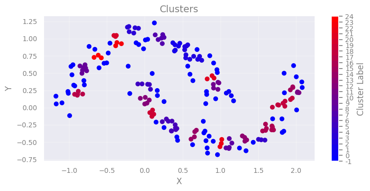
Well…this is kind of embarrassing ! DBSCAN should work, what’s the problem?
Question
Which are the optimal parameters?
In order to identify the two clusters play around with the eps and mins_sample.
HINT: suggested ranges 0.05 – 0.30, 2 – 7, respectively
NOTE: the group of points with -1 indicate noise.
[Click here for a possible good pair...]
eps=0.22mins_sample=5
Can we automated the search?#
The previous exercise demonstrated that it’s not easy, and perhaps not even obvious, what the optimal parameters are. Indeed, there is a variety of approaches (see for example these articles statexchange/88872, stackoverflow/15050389). We need to properly define two parameters.
We can identify a similar “elbow” point, by investigating the (sorted) distances for all pointe as a function of the number of points. That can help estimate the
epsparameter.Regarding the
minPtswe need to apply domain knowledge (i.e. information from the specific problem). However, a general rule is: 2 times the number of dimensions minus 1 (Sander et al., 1998).
Given that second choice, the determination of eps becomes a bit easier: once minPts is fixed, we can explore different values for eps. Still, we need a metric that can quantify the performance of the algorithm. We can apply the metrics we used previously but we need to udnerstand the their limitations There are several available (see, for example, sklearn - clustering metrics).
So, let’s see how can we search for the optimal eps. What we are going to do it to search for a range of eps values and make a plot of the number of identified clusters per value. We will then visualize some indicative eps values to check the best results. For the optimal number of minPts we will follow the rule above, which, given the 2 dimensions of our problem (x,y), results in minPts \(= 2 \times 2 -1 = 3 \).
# number of clusters / groups
n_clusters = []
# search range for eps
eps_range = np.arange(0.001, 0.5, 0.01)
# run DBSCAN for each value, and get the number of clusters
for e in eps_range:
dbscan = DBSCAN(eps=e, min_samples=3)
dbscan.fit(Xd)
clstrs = len(set(dbscan.labels_))
print(e, ":", clstrs)
n_clusters.append(clstrs)
# plotting the results
plt.plot(eps_range, n_clusters, '*--', c='orange' )
plt.xlabel('eps')
plt.ylabel('number of clusters')
0.001 : 1
0.011 : 2
0.020999999999999998 : 2
0.030999999999999996 : 5
0.040999999999999995 : 8
0.05099999999999999 : 16
0.06099999999999999 : 23
0.071 : 26
0.08099999999999999 : 25
0.09099999999999998 : 23
0.10099999999999998 : 21
0.11099999999999999 : 19
0.12099999999999998 : 18
0.13099999999999998 : 11
0.141 : 10
0.15099999999999997 : 8
0.16099999999999998 : 8
0.17099999999999999 : 5
0.18099999999999997 : 3
0.19099999999999998 : 3
0.20099999999999996 : 3
0.21099999999999997 : 3
0.22099999999999997 : 3
0.23099999999999996 : 3
0.24099999999999996 : 3
0.25099999999999995 : 3
0.26099999999999995 : 2
0.27099999999999996 : 2
0.28099999999999997 : 2
0.291 : 1
0.30099999999999993 : 1
0.31099999999999994 : 1
0.32099999999999995 : 1
0.33099999999999996 : 1
0.34099999999999997 : 1
0.3509999999999999 : 1
0.36099999999999993 : 1
0.37099999999999994 : 1
0.38099999999999995 : 1
0.39099999999999996 : 1
0.4009999999999999 : 1
0.4109999999999999 : 1
0.42099999999999993 : 1
0.43099999999999994 : 1
0.44099999999999995 : 1
0.45099999999999996 : 1
0.4609999999999999 : 1
0.4709999999999999 : 1
0.4809999999999999 : 1
0.49099999999999994 : 1
Text(0, 0.5, 'number of clusters')
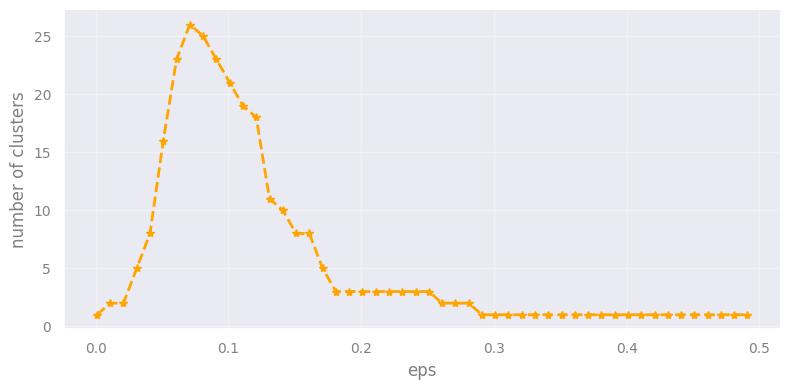
Let’s try some of these values to visualize the results. We will use the following helpful plotting function.
def run_n_show(eps_run, ax):
"""A quick funtion to run the DBSCAN with a specific
eps value, and visualize the result to check.
ax refers to the subplot id for the plot. """
# run the algorithm
dbscan_run = DBSCAN(eps=eps_run, min_samples=3)
dbscan_run.fit(Xd)
# visualize the predictions
num_classes = len(set(dbscan_run.labels_))
new_map = matplotlib.cm.gray.from_list('clustering', ('blue', 'red'), N=num_classes)
ax.scatter( Xd[:,0], Xd[:,1], c=dbscan_run.labels_,
edgecolors='face', cmap=new_map)
ax.set_title(f"run for eps={eps_run}")
Exercise 2:
Objective: Play around with the values of eps to find the optimal value.
Task: You just need to input various selected values from the plot above and check visually which one seems to work best.
[Check here...after trying a bit]
Apparently `eps` values around the peak (~0.8) lead to too many fragmented clusters. Values lower than that actually detect most points as noise. However, there are values larger than that corresponding to the peak) that lead to a well separation between the two clusters. If we increase the `eps` more then it puts all points into a single cluster.fig, ( (ax1, ax2), (ax3, ax4)) = plt.subplots(2,2,
sharey=True, sharex=True,
figsize=(10,10))
run_n_show(0.04, ax1)
ax1.set_ylabel('Y')
run_n_show(0.1, ax2)
ax2.set_xlabel('X')
run_n_show(0.15, ax3)
ax3.set_ylabel('Y')
run_n_show(0.23, ax4)
ax4.set_xlabel('X')
plt.tight_layout()
plt.show()
plt.show()
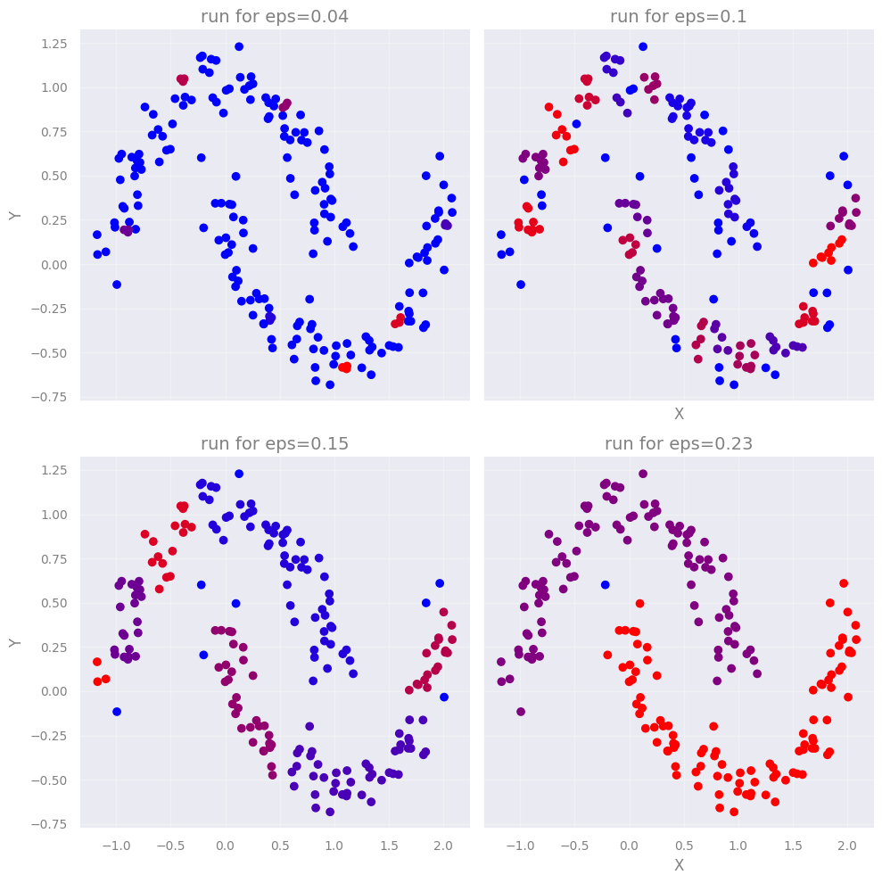
Comparing the two algorithms#
Let’s now check if K-means is able to recover the clusters. It is kind of obvious what should be the number of clusters…
# number of clusters
Clusters_kmeans = 2
# preparing the model with this number of clusters
kmeans_model = KMeans(n_clusters=Clusters_kmeans)
# fitting the model to the data
kmeans_model.fit( Xd )
# coordinates of the clusters for plotting
cc_x = kmeans_model.cluster_centers_[:,0]
cc_y = kmeans_model.cluster_centers_[:,1]
# plotting the centers
plt.plot(cc_x, cc_y, 'k+', ms=100)
# plotting the datapoints color-coded according
# to the cluster they have been assigned to
new_map = matplotlib.cm.gray.from_list('clustering', ('blue', 'red'), N=Clusters_kmeans)
scat2 = plt.scatter( Xd[:,0], Xd[:,1], c=kmeans_model.labels_, edgecolors='face', cmap=new_map)
cb = plt.colorbar(scat2, ticks=range(0,Clusters_kmeans+1,1)) # number of clusters
cb.set_ticklabels(range(1,Clusters_kmeans+2,1))
cb.set_label('Cluster Label')
add_plot_info()
plt.show()
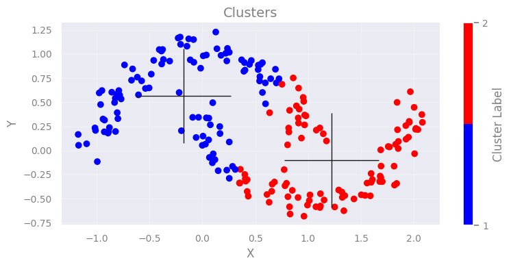
Question
What would you comment regarding the performance of K-means instead of DBSCAN?
[Think a bit before clicking here...]
Obviously, K-means algorithm is able to find two clusters. However, it fails to properly identify the two cluasters as these are not isotropic (a basic assumption for K-means).Application#
The following dataset originates from measurements of two spectral lines for a sample of stars. The strength of a spectral line can be measured by its equivalent width (EQW).

(Credit: Wikipedia: Equivalent Width, by Szdori )
Therefore, the larger the EQW the stronger the line is. The presence of spectral lines depends on the temperature of the stellar sources. Because of this, we see a developmet of different spectral lines as we move from the hottest to the cooler stars. This corresponds to moving from earlier spectral types (O-type stars; 50-25kK) to later ones (M-type; 3.5-2.5kK) see the Morgan-Keenan spectral classification scheme].
Exercise 3:
Objective: Identify the clusters of spectral types for hot massive stars based on the ratio of spectral lines.
Taks: To do this follow the automated approach for K-means. In particular:
Run the automated estimate of the identified clusters we run previously for K-means.
Check all metrics and decide which one to use.
Run the K-means algorithm with the selected number of clusters and visualize the result.
Think over your results (whay could they mean?) and cross-check with the real data.
def flospecConv(arg):
"""
Function to convert from spectral types to
float numbers (e.g. B0,O9.5 to 20.0,19.5)
and backwards.
"""
try:
float(arg)
if str(arg)[0]=='1':
sp = 'O'
elif str(arg)[0]=='2':
sp = 'B'
elif str(arg)[0]=='3':
sp = 'A'
else:
sys.exit(' ! ERROR: more than O/B stars! Adjust conversion function.')
new_arg = sp+str(arg)[1:]
except ValueError:
if arg[0]=='O' or arg[0]=='o':
fl = '1'
elif arg[0]=='B' or arg[0]=='b':
fl = '2'
elif arg[0]=='A' or arg[0]=='a':
fl = '3'
else:
sys.exit(' ! ERROR: Check input! If more than O/B stars adjust conversion function.')
new_arg = float(arg.replace(arg[0],fl))
return new_arg
# Reading the data file and selecting lines
# when selecting lines do it in pairs, and with shorter line first
PATH_data = "data/stellar_types.dat"
sellines = ['HeII/4200', 'HeI/4471'] # in order of wavelength
#sellines = ['HeI/4471', 'MgII/4481'] # in order of wavelength
stars=defaultdict(list)
with open(PATH_data,'r') as inf:
for line in inf:
cols = line.split()
objt = cols[0]
spln = cols[1]
if spln in sellines:
# print(splin)
eqw = cols[2]
stars[objt].append(eqw) # the shorter line is appended first!
#print(stars)
# Creating data structures:
sptype, flosptype, eqwA, eqwB = [], [], [], []
for s in stars.keys():
sptype.append(s.split('-')[0])
flosptype.append(flospecConv(s.split('-')[0]))
eqwA.append(float(stars[s][0])) # A is the shorter line
eqwB.append(float(stars[s][1])) # B is the other line (obviously!)
# > Organizing data in an analysis-ready fashion:
X = np.column_stack((eqwA,eqwB))
print('Sample shape:')
print("___________________________________")
print(' X | ' + str(X.shape))
print(' | ' + str(X.shape[0]) + ' samples x ' + str(X.shape[1]) + ' diagnostics' )
Sample shape:
___________________________________
X | (697, 2)
| 697 samples x 2 diagnostics
# Visualize data
scat = plt.scatter(eqwA, eqwB, c='k')
# automatic labelling from the lines
plt.xlabel(r""+f"EQW of { sellines[0].split('/')[0]} $\lambda${sellines[0].split('/')[1]}")
plt.ylabel(r""+f"EQW of { sellines[1].split('/')[0]} $\lambda${sellines[1].split('/')[1]}")
# simpler approach
# plt.xlabel(r"EQW of line HeII $\lambda$4200 ")
# plt.ylabel(r"EQW of line HeI $\lambda$4471 ")
plt.show()
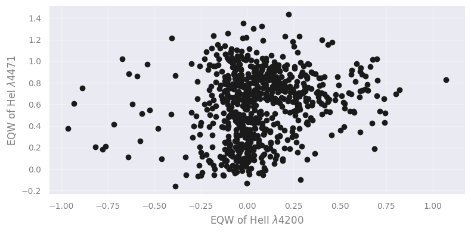
# Enter code here (automated detection
# of clusters for K-means)
from sklearn.metrics import silhouette_score, calinski_harabasz_score, davies_bouldin_score
# Define range of cluster numbers to test
k_values = range(2, 11)
# Initialize lists to store scores
inertia = []
silhouette = []
calinski = []
davies = []
# Fit KMeans and compute metrics for each k
for k in k_values:
kmeans = KMeans(n_clusters=k, n_init=10, random_state=42)
labels = kmeans.fit_predict(X)
inertia.append(kmeans.inertia_)
silhouette.append(silhouette_score(X, labels))
calinski.append(calinski_harabasz_score(X, labels))
davies.append(davies_bouldin_score(X, labels))
# Plot all metrics for visual comparison
fig, axs = plt.subplots(2, 2, figsize=(12, 10))
axs[0, 0].plot(k_values, inertia, 'bo-')
axs[0, 0].set_title('Elbow Method (Inertia)')
axs[0, 0].set_xlabel('k')
axs[0, 0].set_ylabel('Inertia')
axs[0, 1].plot(k_values, silhouette, 'go-')
axs[0, 1].set_title('Silhouette Score')
axs[0, 1].set_xlabel('k')
axs[0, 1].set_ylabel('Score')
axs[1, 0].plot(k_values, calinski, 'ro-')
axs[1, 0].set_title('Calinski-Harabasz Index')
axs[1, 0].set_xlabel('k')
axs[1, 0].set_ylabel('Score')
axs[1, 1].plot(k_values, davies, 'mo-')
axs[1, 1].set_title('Davies-Bouldin Index')
axs[1, 1].set_xlabel('k')
axs[1, 1].set_ylabel('Score')
plt.tight_layout()
plt.show()
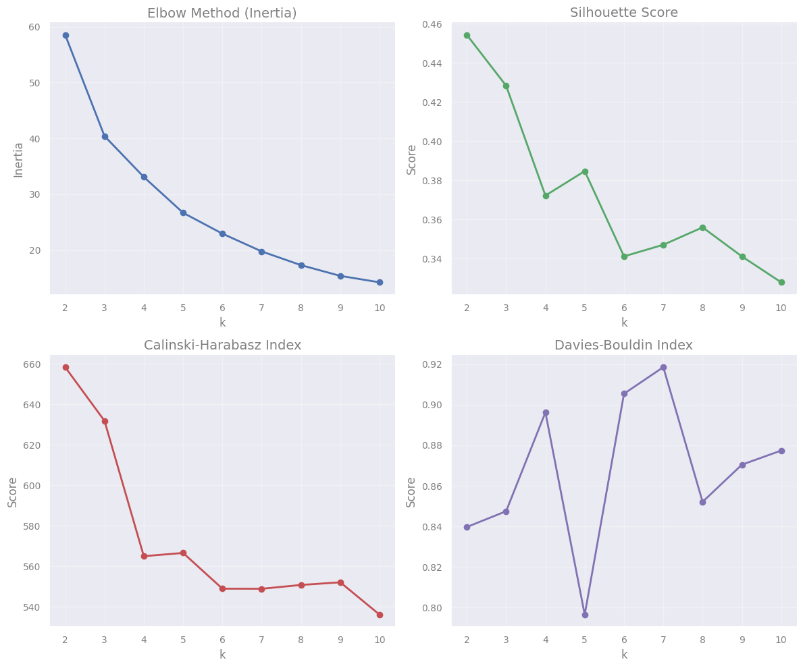
# Enter code here (application of K-means with
# selected number of clusters and visualization)
# Select number of clusters
Clusters_kmeans = 5
# Run the algorithm
kmeans_model = KMeans(n_clusters=Clusters_kmeans)
kmeans_model.fit( X )
# Return identified clusters
print(f"Cluster centers from K-means ({len(kmeans_model.cluster_centers_)} found):")
print(kmeans_model.cluster_centers_)
# Plotting the clusters' centers
cc_x = kmeans_model.cluster_centers_[:,0]
cc_y = kmeans_model.cluster_centers_[:,1]
plt.plot(cc_x, cc_y, 'k+', ms=100)
# Visualization of data and clusters
new_map = matplotlib.cm.gray.from_list('clustering', ('blue', 'red'), N=Clusters_kmeans)
scat2 = plt.scatter( X[:,0], X[:,1], c=kmeans_model.labels_, edgecolors='face', cmap=new_map)
cb = plt.colorbar(scat2, ticks=range(0,Clusters_kmeans+1,1)) # number of clusters
cb.set_ticklabels(range(1,Clusters_kmeans+2,1))
cb.set_label('Cluster Label')
plt.xlabel(r""+f"EQW of { sellines[0].split('/')[0]} $\lambda${sellines[0].split('/')[1]}")
plt.ylabel(r""+f"EQW of { sellines[1].split('/')[0]} $\lambda${sellines[1].split('/')[1]}")
plt.grid(True)
plt.show()
Cluster centers from K-means (5 found):
[[ 0.42250677 0.67777278]
[-0.01379996 0.18237753]
[-0.00798108 0.62521188]
[ 0.03227502 0.95695022]
[-0.67356546 0.52196501]]
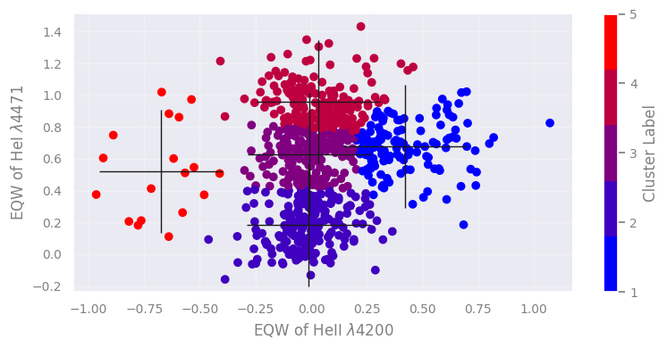
Question
Take a few minutes and think over the results - what could possibly these clusters mean?
[...and after that check here]
Run the cell below to plot the equivalent widths of the two lines with their associated spectral types. Some observations include:
The bulk of sources is constrained for values of HeII 4200 line around 0 A. This is true for the majority of the sources of mid- to late-B types, as HeII lines are practically absent.
There is a number of sources with positive HeII 4200 line. These correspond to late-O and earlier-B types where the ionization of HeII is still strong.
Along the HeII 4200 line at 0 A we find approximately 3 clustes with HeI 4471 line increasing from 0 A to around 0.6 A and larger values around 1 A. There is indeed a steady increase of this line as we move from the late-O/earlier-B type stars to mid-B and later-B.
There is a cluster of sources found left of the HeII 4200 line. These negative values correspond to emission lines rather than typical absorption. This (mostly) indicates that the determination of the equivalent width in this case is probably erroneous resulting in emission lines (although hot O-type stars can have HeII lines in emission).
# Plotting the real data
fig = plt.figure()
scat = plt.scatter(eqwA, eqwB, c=flosptype, edgecolors='face', cmap="viridis")
# Plot all spectral types
specrange = np.arange(15,30,1)
cb = plt.colorbar(scat, ticks=specrange) # range of available spectral types
cb.set_ticklabels([flospecConv(a) for a in specrange])
# or if you want to present a smaller or indicative number of types
# cb = plt.colorbar(scat, ticks=[15,22,29]) # range of available spectral types
# cb.set_ticklabels(['O5','B2','B9'])
cb.set_label('Spectral Types')
plt.xlabel(r""+f"EQW of { sellines[0].split('/')[0]} $\lambda${sellines[0].split('/')[1]}")
plt.ylabel(r""+f"EQW of { sellines[1].split('/')[0]} $\lambda${sellines[1].split('/')[1]}")
plt.show()
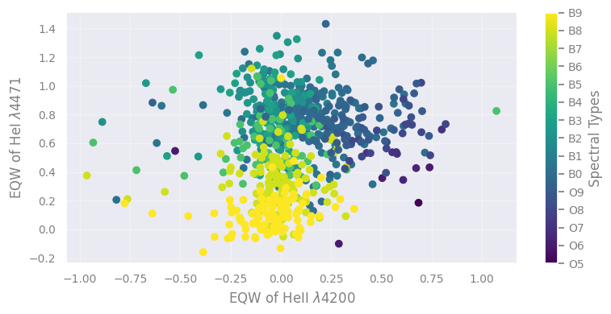
Clustering algorithms overview#
We start by presenting a set of sklearn clustering algorithms with toy datasets, and then we continue by applying some of them in various astrophyiscal datasets.
This serves as a showcase of the available methods and how they compare. You can easily adapt any of these methods to the following examples or your own problems.

(Credit: Overview of clustering methods, scikit-learn API)
Question
Explore the results above - what differences do you notice?
[Think for a few minutes, before clicking...]
- There is not a single best algorithm.
- Not all the algorithms identify the same number of clusters.
- Some algorithms are better to detect arbitrary cluster shapes than others.
- Some algorithms can be faster.
- The intuitive clustering might not apply to very high dimensional data.
###EOF